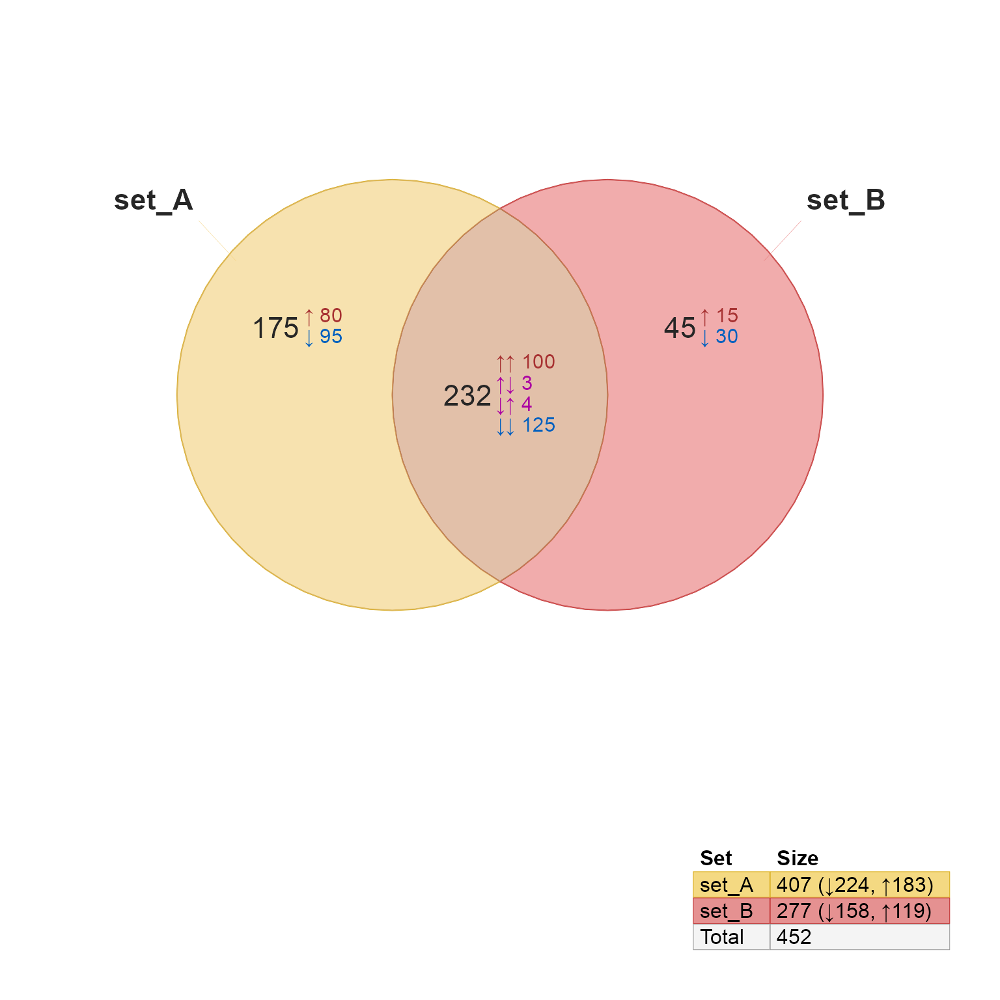
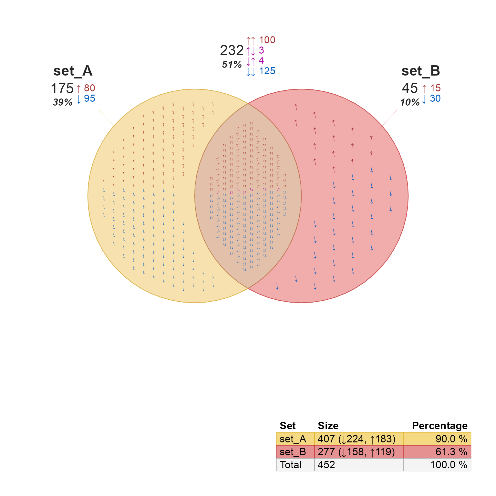
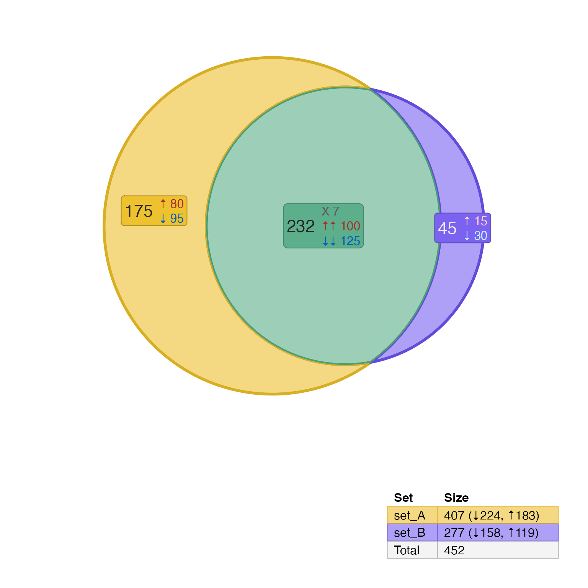

R/venndir-conversion.R
signed_counts2setlist.Rdvenndir conversion from signed overlap counts to setlist
signed_counts2setlist(x, sep = "&", value_sep = "_", ...)list where the list names are the names of each set,
and values of each list element is a vector of items.
The items are artificial labels used for convenience.
This function takes input in the form of a list
whose names are set overlap labels, for example "set_A",
or "set_A&set_B".
Each list element is an integer vector whose names
are value overlaps, for example "1", or "-1_1",
and whose integer values contain the overlap counts.
Other venndir conversion:
counts2setlist(),
im2list(),
im_value2list(),
list2im_opt(),
list2im_value(),
overlaplist2setlist()
x <- list(
"set_A"=c(
"1"=80,
"-1"=95
),
"set_B"=c(
"1"=15,
"-1"=30
),
"set_A&set_B"=c(
"1_1"=100,
"-1_-1"=125,
"1_-1"=3,
"-1_1"=4
)
)
setlist <- signed_counts2setlist(x)
# default Venn diagram
vo <- venndir(setlist, overlap_type="each")

# show counts,percent outside, and sign for each item inside
venndir(setlist,
overlap_type="each",
show_labels="NCSPi",
show_items="sign",
item_degrees=10)

# show counts inside without set label (which is in the legend)
vo <- venndir(setlist,
show_labels="cs",
proportional=TRUE,
label_style="fill_box")
